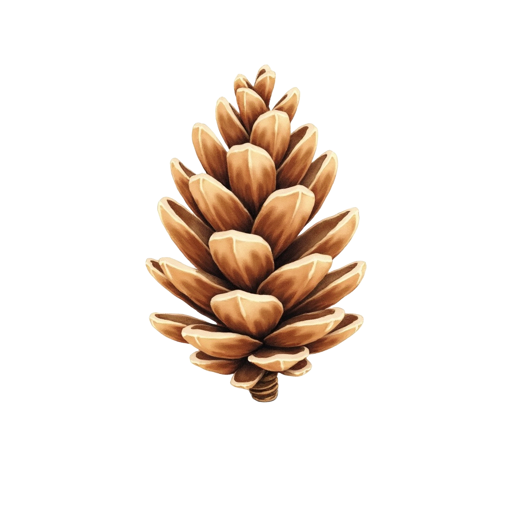

01
Asset Creation
Creating and selecting individual visual assets with attention to consistency, style and usability.
Creative / Digital Products
Clipart Bundles & Digital Assets
A selection of digital products created and prepared as downloadable creative assets, combining visual design, asset organization and product presentation.
The work covers the process from individual assets through to curated bundles prepared for digital marketplaces.
Featured Product 01
A nature-inspired clipart collection organized as a cohesive digital bundle, with individual assets curated into a consistent visual product.

Featured Product 02
A botanical asset collection focused on foliage and watercolor elements, designed as a versatile digital pack for creative projects and decorative applications.
Workflow
01
Creating and selecting individual visual assets with attention to consistency, style and usability.
02
Grouping related assets into themed collections that work as complete digital products.
03
Structuring digital files and preparing the final bundle for a clear and practical customer experience.
04
Preparing product visuals, titles and descriptions to communicate the value and contents of each pack.
Product Preparation
Each collection is prepared with attention to product naming, descriptions, tags, file structure and visual presentation, creating a complete digital product rather than a simple collection of individual files.
Skills
Project Outcome
These projects demonstrate the ability to take creative assets through curation, organization and presentation, transforming them into structured digital products ready for distribution.